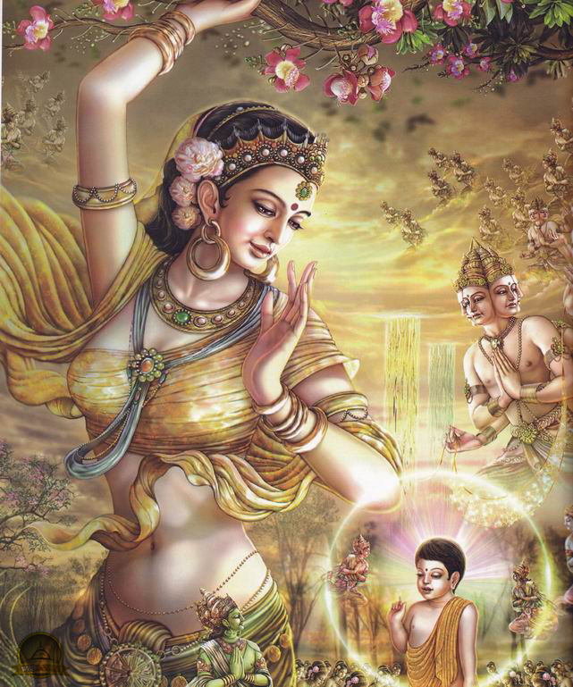

-

สันนิษฐานว่าพระโสณะและพระอุตตระได้เดินทางมายังสุวรรณภูมิในช่วงก่อน พ.ศ. ๕๐๐
ดังมีหลักฐานทางประวัติศาสตร์สมัยทวารวดีที่ขุดพบบริเวณภาคกลางของไทย เช่น สถูป ธรรจักรศิลากับกวางหมอบ
ที่เป็นศิลปกรรมอินเดีย สมัยพระเจ้าอโศกมหาราช
-
ประมาณ พ.ศ. ๑๓๐๐
สมัยอาณาจักรศรีวิชัยเรืองอำนาจกษัตริย์ศรีวิชัยได้ทรงอุปถุมภ์การเผยแพร่พระพุทธศาสนานิกายมหายานให้แพร่หลายไปทั่วคาบสมุทรภาคใต้
ต่อมาประมาณ พ.ศ. ๑๕๕๐ สมัยพระเจ้าสุริยวรมันที่ ๒ แห่งอาณาจักรขอมเรืองอำนาจ
ได้ทรงแผ่ขยายอิทธิพลทางการเมืองและพุทธศาสนานิกายมหายานมายังเมือละโว้
ซึ่งนับถือพระพุทธศาสนานิกายเถรวาทและศาสนาพราหมณ์-ฮินดูอยู่ก่อนแล้ว
ส่งผลให้การนับถือศาสนาในเมืองละโว้ มีการผสานกันระหว่างพระพุทธศาสนานิกายเถรวาท นิกายมหายาน
และศาสนาพราหมณ์-ฮินดู
-
ประมาณ พ.ศ. ๑๖๐๐ สมัยพระเจ้าอนุรุทมหาราชแห่งอาณาจักรพุกาม ซึ่งนับถือพระพุทธศาสนานิกายเถรวาท
ได้ทรงแผ่อิทธิพลเข้ามายังล้านนาส่งผลให้พระพุทธศาสนานิกายเถรวาทแบบพุกาม
ได้เจริญรุ่งเรืองขึ้นทางตอนเหนือของไทย หลักฐานสำคัญ ได้แก่ เจดีย์ที่วัดเชียงมั่น จังหวัดเชียงใหม่
-
ใน พ.ศ. ๑๖๙๖ พระเจ้าปรากรมพาหุมหาราชา กษัตริย์แห่งรังกา ได้ทรงบำรุงพระพุทธศาสนา
โดยรวมพระสงฆ์เป็นนิกายเดียวกัน และโปรดเกล้าฯ ให้มีการสังคายนาพระธรรมวินัยครั้งที่ ๗ ขึ้น
ทำให้พระพุทธศาสนาเจริญรุ่งเรืองมาก มีพระสงฆ์จากดินแดนสุวรรณภูมิเดินทางไปศึกษาพระพุทธศาสนาที่ลังกา
แล้วนำกลับมาเผยแผ่ในดินแดนของตนเป็นจำนวนไม่น้อย
สำหรับการนับถือพระพุทธศาสนาของคนไทย พระพุทธศาสนานิกายเถรวาทแบบลังกาวงศ์
เป็นต้นแบบที่คนไทยได้ยอมรับนับถือกันมาเป็นเวลาหลายสมัย
สรุปได้ ดังนี้
-
พ่อขุนรามคำแหงมหาราชทรงทราบกิตติศัพท์การประพฤติเคร่งครัดพระธรรมวินัยของพระสงฆ์ในเมืองนครศรีธรรมราช
ที่นับถือพุทธศาสนานิกายเถรวาทแบบลังกาวงศ์ จึงโปรดเกล้าฯ
ให้นิมนต์พระสังฆราชจากเมืองนครศรีธรรมราชขึ้นมาเผยแผ่พระพุทธศาสนายังผลให้พระพุทธศาสนานิกายเถรวาทแบบลังกาวงศ์เป็นที่นับถือกันอย่างแพร่หลายในเมืองสุโขทัย
-
พระเจ้ากือนา ได้ทรงส่งฑูลมาอาราธนาพระสมุนเถระจากเมืองสุโขทัย ในรัชสมัยพระมหาธรรมราชาลิไทย
ขึ้นไปเผยแผ่พระพุทธศาสนายังล้านนา
พระพุทธศาสนานิกายเถรวาทแบบลังกาวงศ์จึงได้ประดิษฐานตั่งมั่นที่ล้านนาตั้งแต่นั้นมา
-
ชาวอยุธยานับถือพระพุทธศาสนานิกายเถรวาทมาแต่เดิม เพราะมีเขตแดนติดกับสุโขทัย
ทำให้พระพุทธศาสนาเผยแผ่ถึงกัน พระสงฆ์อยุธยายังได้เดินทางไปศึกษาพระพุทธศาสนาที่ลังกา จน พ.ศ. ๒๒๙๖
พระพุทธศาสนาในลังกาถึงจุดเสื่อม พระเจ้ากิตติศิริราชสิงห์
กษัตริย์ลังกาจึงส่งพระราชสาส์นมายังพระเจ้าอยู่หัวบรมโกศ เพื่อทูลขอพระสงฆ์อยุธยาไปบวชให้ชาวสิงหล
ซึ่งได้ทรงส่งพระอุบาลีและพระอริยมุนีเป็นหัวหน้าคณะสงฆ์ ๑๕ รูป เดินทางไปถวายลังกา
นับจากนั้นพระพุทธศาสนาในลังกาจึงได้เจริญขึ้นเป็นลำดับ และทำให้เกิดเป็นนิกายอุบาลีวงศ์
หรือสยามวงศ์ตั้งมั่นอยู่ในลังกาจนถึงทุกวันนี้
-
สมเด็จพระเจ้าตากสินมหาราชได้ทรงฟื้นฟูพระพุทธศาสนาที่เสื่อมโทรมเพราะภัยสงครามในคราวเสียกรุงศรีอยุธยา
เมื่อ พ.ศ. ๒๓๑๐ โดยโปรดเกล้าฯ ให้นิมนต์พระสงฆ์ที่หลบหนีภัยสงครามไปยังที่ต่างๆ
ให้กลับเข้ามาจำพรรษาอยู่ที่วัดเหมือนเดิม
และให้มีการประชุมสงฆ์คัดเลือกสงฆ์ที่มีภูมิธรรมสูงขึ้นเป็นพระสังฆราช
ซึ่งในที่สุดได้มีมติให้พระอาจารย์ดี วัดประดู่ กรุงศรีอยุธยา เป็นสมเด็จพระสังฆราชองค์แรกของธนบุรี
นอกจากนี้ ยังโปรดเกล้าฯ
ให้ขอยืมพระไตรปิฎกสยามวงศ์ฉบับสมบูรณ์จากทางเหนือและนครศรีธรรมราชมาคัดลอกให้เป็นต้นฉบับหลวงเพื่อรักษาหลักธรรมไว้ให้มั่นคง
สมเด็จพระเจ้าตากสินมหาราชยังทรงปฏิสังขรณ์พระอารามสำคัญและโปรดเกล้าฯ ให้สมโภชวัดพระมหาธาตุ
เมืองนครศรีธรรมราชให้เป็นศูนย์กลางพระพุทธศาสนาในภาคใต้ ตลอดจนทรงสร้างวัดในกรุงธนบุรี
-
-
ทรงสร้างวัดพระศรีรัตนศาสดาราม และทรงปฏิสังขรณ์วัดสุทัศนเทพวราราม โปรดเกล้าฯ ให้สังคายนาครั้งที่ ๙
มีการแต่งและแปลคัมภีร์ทางพระพุทธศาสนา เช่น ไตรภูมิโลกวินิจฉยกถา รัตนพิมพวงศ์ สังคีติยวงศ์ มหาวงศ์
เป็นต้น
-
ทรงฟื้นฟูประเพณีวิสาขบูชา ทรงส่งพระสงฆ์ไปสืบพระพุทธศาสนายังลังกา ทรงสร้างพระวิหารหลวงวัดสุทัศน์ฯ
ทรงสลักบานประตูไม้
ประดับพระวิหารพระศรีศากยมุนีที่ทรงให้หล่อพอกพระเศียรและต่อนิ้วพระหัตถ์ซึ่งเดิมสั้นยาวไม่เท่ากัน
ให้ยาวเสมอกัน
-
โปรดเกล้าฯ ให้ราชบัณฑิตแต่งและจารึกสรรพวิทยาและทรงให้สร้างพระนอนยาว ๔๙ เมตร ไว้ที่วัดพระเชตุพนฯ
มีการแต่งวรรณคดีพระพุทธศาสนา เช่น ร่ายยาวมหาเวสสันดรชาดก ปฐมสมโพธิกถา
-
เมื่อยังทรงเป็นเจ้ามงกุฎ ทรงผนวชเป็นภิกษุ ทรงมีพระฉายานามว่า "วชิรญาโณ"
ทรงเลื่อมใสในวัตรปฏิบัติของพระรามัญวงศ์ จึงทรงอุปสมบทใหม่ภายหลังมีผู้บวชตามมาก
จึงทรงตั้งเป็นนิกายใหม่เรียกว่า ธรรมยุติกนิกาย
-
ทรงวางรูปแบบการศึกษาคณะสงฆ์ใหม่เป็นแผนกนักธรรมและแผนกบาลี ทรงสถาปนาสถาบันการศึกษาสงฆ์ขั้นสูง คือ
มหาวิทยาลัยจุฬาลงกรณราชวิทยาลัย
-
ทรงพระราชนิพนธ์วรรณคดีพระพุทธศาสนา เช่น พระพุทธเจ้าตรัสรู้อะไร มงคลสูตรคำฉันท์
จดหมายเหตุเรื่องพระภิกษุดูฟุตบอล
-
ทรงผนวชและทรงจำพรรษาที่วัดบวรนิเวศวิหาร โดยทรงมีพระฉายานามว่า "ปชาธิโป" โปรดเกล้าฯ
ให้จัดพิมพ์พระไตรปิฎกฉบับสยามรัฐ
-
มีการแปลพระไตรปิฎกเป็นสำนวนธรรมดาและสำนวนเทศนา เรียกว่า พระไตรปิฎกเทศนาฉบับหลวง
-
ทรงออกผนวช โดยมีพระฉายานามว่า "ภูมิพโล" มีการบัญญัติกฎหมายคณะสงฆ์ พ.ศ.๒๕๐๕
กำหนดให้พระสังฆราชเป็นประมุขฝ่ายพุทธจักร มีการสร้างวัดไทยขึ้นในต่างประเทศ
-
สมเด็จ พระบรมโอรสาธิราชฯ ทรงแสดงพระองค์เป็นพุทธมามกะ ที่วัดพระศรีรัตนศาสดาราม เมื่อวันที่ 3 มกราคม
พ.ศ. 2509 ก่อนเสด็จพระราชดำเนินไปทรงศึกษาต่อที่ประเทศอังกฤษ
นอกจากนี้ สมเด็จพระบรมโอรสาธิราชฯ มีพระราชศรัทธาออกบวชในพระพุทธศาสนา
โดยพระบาทสมเด็จพระปรมินทรมหาภูมิพลอดุลยเดชโปรดให้จัดการพระราชพิธีผนวช ณ
พัทธสีมาวัดพระศรีรัตนศาสดาราม ในวันที่ 6 พฤศจิกายน พ.ศ. 2521 โดยมีสมเด็จพระอริยวงศาคตญาณ
(วาสนมหาเถร) เป็นพระราชอุปัธยาจารย์ ได้รับถวายพระสมณนามว่า “วชิราลงฺกรโณ” และได้ประทับอยู่ ณ
วัดบวรนิเวศวิหาร ตลอดจนทรงลาสิกขาในวันที่ 20 พฤศจิกายน พ.ศ. 2521